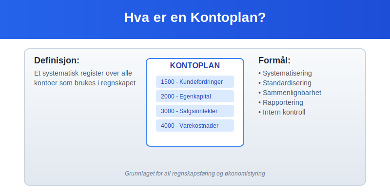
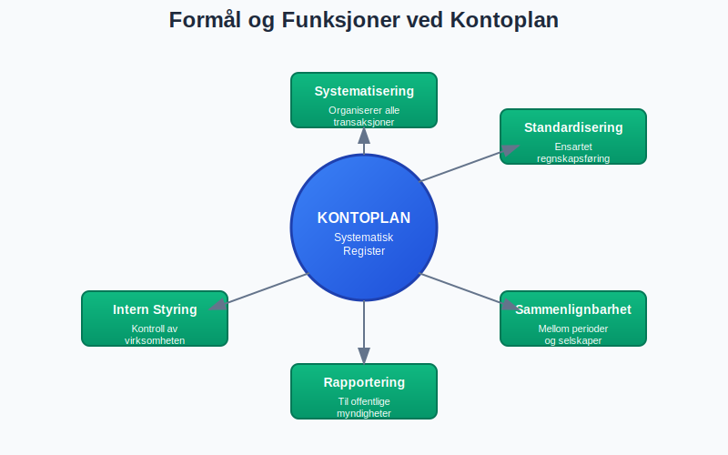
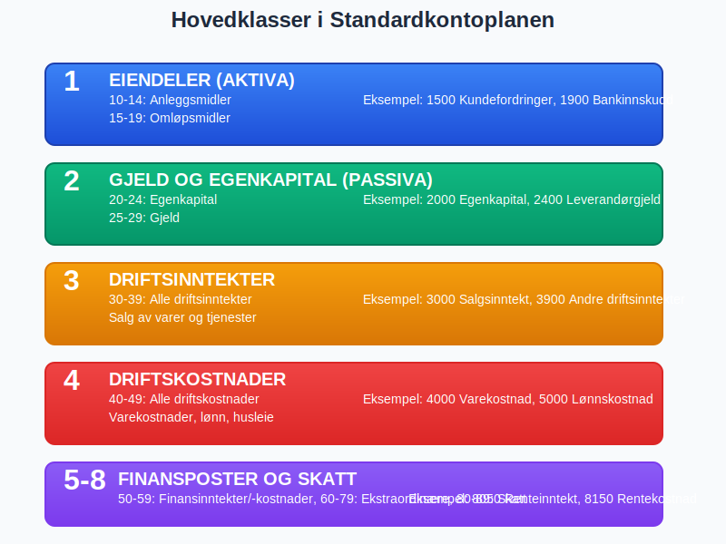
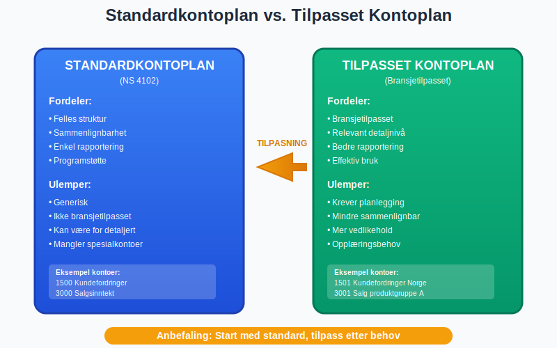
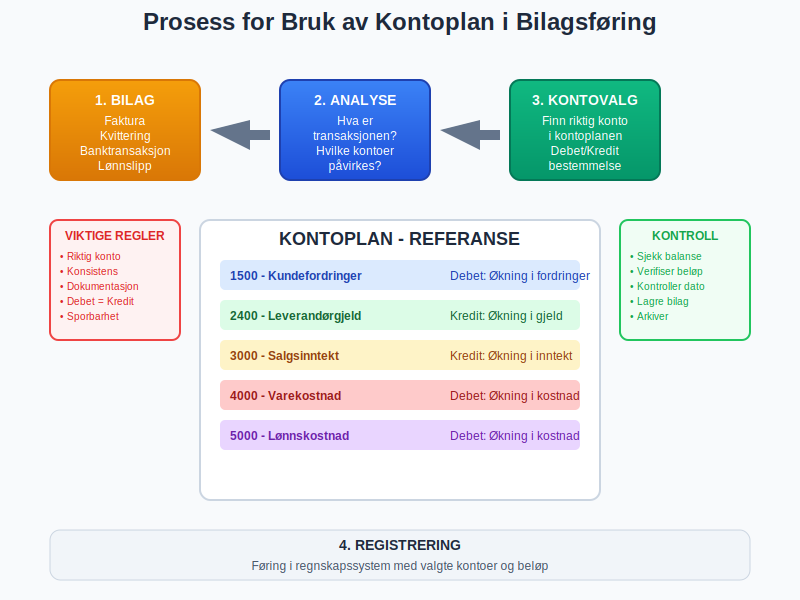
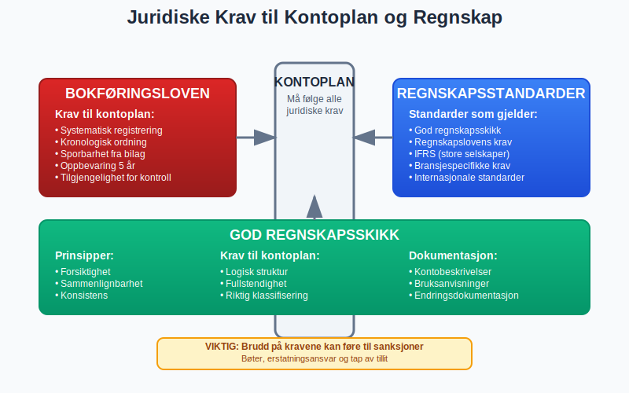
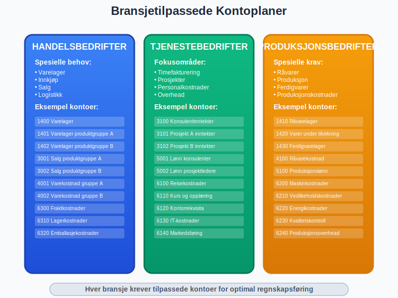
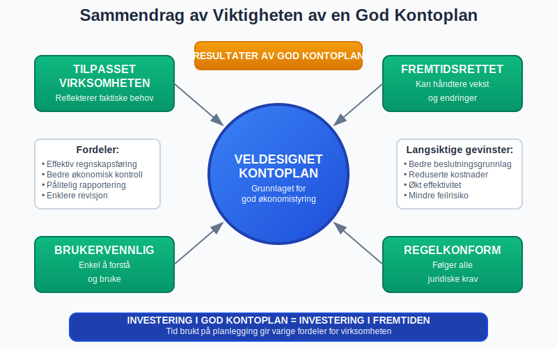

En kontoplan er et systematisk register over alle kontoer som brukes i et selskaps regnskap. Den fungerer som ryggraden i enhver bokføring og gir struktur og oversikt over alle økonomiske transaksjoner.

For en detaljert gjennomgang av regnskapskontoer, se Hva er en Regnskapskonto?.
Definisjon av Kontoplan
En kontoplan er en strukturert oversikt over alle kontoer som et foretak bruker for å registrere sine økonomiske transaksjoner. Hver konto har et unikt kontonummer og en kontobeskrivelse som beskriver hva som skal registreres på kontoen.
Formål med Kontoplan
Kontoplanen har flere viktige funksjoner:
- Systematisering av alle økonomiske transaksjoner
- Standardisering av regnskapsføringen
- Sammenlignbarhet mellom perioder og selskaper
- Rapportering til offentlige myndigheter
- Intern styring og kontroll av virksomheten

Struktur og Oppbygging
Kontoplannivåer
En norsk kontoplan er typisk bygget opp med fire nivåer:
| Nivå | Beskrivelse | Eksempel | Formål |
|---|---|---|---|
| Klasse | Hovedkategorier (1 siffer) | 1, 2, 3, 4, 5 | Grunnleggende inndeling |
| Gruppe | Undergrupper (2 siffer) | 15, 20, 30 | Mer detaljert kategorisering |
| Art | Kontotype (3-4 siffer) | 150, 1500 | Spesifikk kontotype |
| Objekt | Detaljnivå (5+ siffer) | 15001, 150010 | Høyeste detaljnivå |
Hovedklasser i Standardkontoplanen
Den norske standardkontoplanen er delt inn i fem hovedklasser:
Klasse 1: Eiendeler (Aktiva)
- 10-14: Anleggsmidler
- 15-19: Omløpsmidler
Klasse 2: Gjeld og Egenkapital (Passiva)
- 20-24: Egenkapital
- 25-29: Gjeld
Klasse 3: Driftsinntekter
- 30-39: Driftsinntekter
- 36: Leieinntekt fast eiendom
- 38: Gevinst ved avgang av anleggsmidler
- 39: Annen driftsrelatert inntekt, avgiftspliktig
Klasse 4: Driftskostnader
- 40-49: Driftskostnader
Klasse 5-8: Finansposter og Skatt
- 50-59: Finansinntekter og finanskostnader (se Konto 5500 - Annen kostnadsgodtgjørelse og Konto 5600 - Arbeidsgodtgjørelse til eiere i ANS o.l.)
- 60-79: Ekstraordinære poster
- 80-89: Skattekostnader

Standardkontoplan vs. Tilpasset Kontoplan
Norsk Standardkontoplan (NS 4102)
For en grundig gjennomgang av Norsk Standardkontoplan (NS 4102), se NS 4102.
Tilpasning til Egen Virksomhet
Selv om standardkontoplanen gir en god base, må de fleste bedrifter tilpasse den til sine behov:
- Bransjetilpasning - spesielle kontoer for bransjen
- Detaljnivå - mer eller mindre detaljerte kontoer
- Rapporteringsbehov - tilpasset intern rapportering
- Størrelse - mindre bedrifter kan forenkle

Praktisk Bruk av Kontoplan
Kontonummerering
God praksis for kontonummerering:
- Logisk oppbygging - følg standardstrukturen
- Rom for utvidelse - la mellomrom mellom kontoer
- Konsistens - bruk samme logikk gjennom hele planen
- Dokumentasjon - beskriv hva som skal på hver konto
Eksempel på Kontostruktur
| Kontonummer | Kontobeskrivelse | Forklaring |
|---|---|---|
| 1500 | Kundefordringer | Hovedkonto for alle kundefordringer |
| 1501 | Kundefordringer Norge | Norske kunder |
| 1502 | Kundefordringer EU | EU-kunder |
| 1503 | Kundefordringer øvrige | Kunder utenfor EU |
| 1590 | Avsetning for tap på fordringer | Forventet tap |
Bilagsføring og Kontoplan
Ved bilagsføring er kontoplanen avgjørende:
- Riktig konto - velg korrekt konto for hver transaksjon
- Konsistens - bruk samme konto for like transaksjoner
- Dokumentasjon - noter spesielle forhold
- Kontroll - sjekk at debet og kredit stemmer

Digitale Kontoplaner
Regnskapsprogrammer
Moderne regnskapsprogrammer tilbyr:
- Forhåndsinstallerte standardkontoplaner
- Bransjetilpassede kontoplaner
- Automatisk kontering basert på leverandør/kunde
- Rapportering direkte fra kontoplanen
Integrasjon med Andre Systemer
Kontoplanen integreres ofte med:
- ERP-systemer for helhetlig økonomistyring
- Lønnssystemer for automatisk lønnsføring
- Faktureringssystemer for automatisk salgsføring
- Banksystemer for automatisk bankavstemming
Juridiske Krav og Standarder
Bokføringsloven
Bokføringsloven stiller krav til:
- Systematisk registrering av transaksjoner
- Kronologisk og systematisk ordning
- Sporbarhet fra bilag til regnskap
- Oppbevaring av regnskapsopplysninger
Regnskapsstandarder
Kontoplanen må følge:
- God regnskapsskikk - etablerte prinsipper og praksis
- Regnskapslovens bestemmelser
- Internasjonale standarder for større selskaper
- Bransjespecifikke krav der det finnes

Beste Praksis for Kontoplanlegging
Planlegging og Design
- Analyser virksomheten - forstå alle prosesser og transaksjoner
- Involver brukerne - de som skal bruke kontoplanen daglig
- Tenk fremover - planlegg for vekst og endringer
- Test grundig - prøv kontoplanen før full implementering
Vedlikehold og Oppdatering
- Regelmessig gjennomgang - minst årlig evaluering
- Dokumenter endringer - hold oversikt over alle endringer
- Tren brukerne - sørg for at alle forstår endringene
- Backup og sikkerhet - beskytt kontoplanen mot tap
Vanlige Feil å Unngå
- For mange kontoer - ikke lag unødvendig kompleksitet
- For få kontoer - sørg for tilstrekkelig detaljnivå
- Inkonsistent nummerering - følg en logisk struktur
- Manglende dokumentasjon - beskriv alle kontoers formål
Kontoplan for Ulike Bransjer
Handelsbedrifter
Spesielle behov:
- Varelager - detaljerte lagerkontoer
- Innkjøp - kontoer for ulike leverandører og produktgrupper
- Salg - kontoer for ulike kundegrupper og produkter
- Logistikk - frakt- og transportkontoer
Tjenestebedrifter
Fokusområder:
- Timefakturering - kontoer for ulike tjenester
- Prosjekter - prosjektspesifikke kontoer
- Personalkostnader - detaljerte lønnskontoer
- Overhead - indirekte kostnader
Produksjonsbedrifter
Spesielle krav:
- Råvarer - kontoer for ulike råmaterialer
- Produksjon - kontoer for produksjonsprosesser
- Ferdigvarer - kontoer for ferdige produkter
- Produksjonskostnader - direkte og indirekte kostnader
Landbruksvirksomheter
Landbruk har særegne regnskapsbehov som krever spesialiserte kontoplaner:
- Biologiske eiendeler - husdyr og avlinger som endrer verdi over tid
- Sesongbaserte inntekter - konsentrerte inntekter ved høsting/salg
- Produksjonstilskudd - komplekse støtteordninger fra det offentlige
- Jordbruksfradrag - spesielle skattefordeler for landbrukssektoren
For en detaljert gjennomgang av regnskapsføring i landbruk, se vår guide til landbrukskontoplan.

Fremtiden for Kontoplaner
Digitalisering og Automatisering
- Kunstig intelligens for automatisk kontering
- Maskinlæring for forbedret kategorisering
- Sanntidsrapportering direkte fra transaksjoner
- Integrerte økosystemer på tvers av systemer
Standardisering
- Internasjonale standarder blir viktigere
- Bransjespesifikke standarder utvikles
- Automatisk rapportering til myndigheter
- Sammenlignbarhet på tvers av land
Konklusjon
En veldesignet kontoplan er fundamentet for god regnskapsføring og økonomistyring. Den må være:
- Tilpasset virksomheten - reflektere faktiske behov
- Fremtidsrettet - kunne håndtere vekst og endringer
- Brukervennlig - enkel å forstå og bruke
- Regelkonform - følge alle juridiske krav
Ved å investere tid i å utvikle en god kontoplan, legger bedrifter grunnlaget for effektiv regnskapsføring, bedre økonomisk kontroll og mer pålitelig rapportering.
